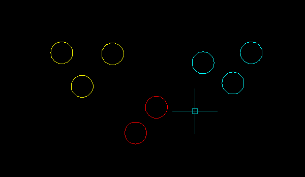

Bounding Box Reactor
This page is delivered for consistency purposes only, as part of the LeeMac sample module of DynALisp, which shows how DynALisp turns existing AutoLISP programs into a module. The program and its description are the work of Lee Mac, who keeps all the credit for them. The original page, with the latest version, is on Lee Mac's website: https://lee-mac.com/boundingboxreactor.html
| Function Syntax | LM-BoundingBoxReactor – original syntax: BBRN / BBRA / BBRR (see aliases) |
| Current Version | 1.0 |
| Compatible with AutoCAD for Mac? | No |
| Compatible with AutoCAD LT? | Yes |
| Original Page | lee-mac.com/boundingboxreactor.html |
Program Description
This program is predominantly a 'proof of concept', and still contains a few bugs with respect to performing undo commands when using the program. However, I am posting it as a beneficial learning tool for those programmers new to using reactors.
The program will allow a user to bound a set of objects with an LWPolyline, whose position will automatically update following any modification of the bounded objects.
There are three modes of operation:
- BBRN (BoundingBox Reactor New) allows a user to create a new group of objects to be bounded. The user is prompted to make a selection of objects and these become the owners of an object reactor controlling the bounding LWPolyline.
- BBRA (BoundingBox Reactor Add) will enable the user to add objects to an existing reactor group: the user is prompted to select a group to which the objects are to be added, then select those objects to add.
- BBRR (BoundingBox Reactor Remove) will allow the user to delete a selection or all objects from a selected group, or delete all reactor groups in a drawing.
Example of Usage

Bundled program notes
;;--------------=={ BoundingBox Reactor NEW }==---------------;;
;; ;;
;; Allows the user to create a new reactor owner group for ;;
;; which a bounding polyline will be updated following ;;
;; modification of an owner within the group ;;
;;------------------------------------------------------------;;
;; Author: Lee Mac, Copyright © 2010 - www.lee-mac.com ;;
;;------------------------------------------------------------;;
Command Names And Aliases
As in every DynALisp module, each program of this sample module has one main command, named LM-*, and the original command names of Lee Mac's page are kept as its aliases: they run the same command, and can be added, renamed or removed in Dyl-Suite (saved in Resources\Aliases.csv). The rows marked ↳ are child commands of LM-BoundingBoxReactor: they are run by their alias, or picked from LM-BoundingBoxReactor when it lists them (their command is named Pst-*).
| Command | Aliases | Name |
|---|---|---|
| LM-BoundingBoxReactor | – | Bounding Box Reactor |
| ↳ BBRN | – | Bounding Box Reactor New |
| ↳ BBRR | – | Bounding Box Reactor Remove |
| ↳ BBRA | – | Bounding Box Reactor Add |